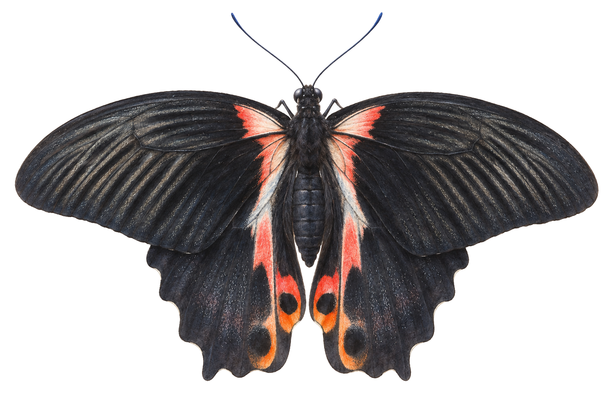

Papilionidae · 017 / 165
স্কারলেট মরমন
Papilio rumanzovia

বৈশিষ্ট্য ও শনাক্তকরণ
বড় কালো প্রজাপতি, লাল দাগ বিশেষত ডানার নিচে ও স্ত্রীতে বেশি স্পষ্ট।
স্ত্রী ও পুরুষের পার্থক্য
পুরুষের পেছনের ডানার ওপর নীলচে-সাদা অংশ স্পষ্ট; স্ত্রীর ডানার গোড়ায় লাল দাগ বেশি।
আকার
ডানা মেলে বিস্তার ৪.৭–৫.৫ ইঞ্চি, প্রায় ১১৯–১৪০ মিমি; ফ্লোরিডা প্রাকৃতিক ইতিহাস জাদুঘরের বিবরণ, ১ ইঞ্চি = ২৫.৪ মিমি ধরে রূপান্তর। ফিলিপাইনের প্রজাতির নির্দেশক মান; শুধু ওকিনাওয়ার পরিমাপ নয়।
ওকিনাওয়ার দ্বীপে রেকর্ড
স্থানীয় সূত্রে উল্লিখিত দ্বীপের রেকর্ড নিচের সূত্রে দেখুন। ইশিগাকি, তাকেতোমি, হাতোমা, ইরিওমোতে, হাতেরুমা ও ইয়োনাগুনির রেকর্ড আছে। মূল বিস্তার ফিলিপাইন অঞ্চলে।
আবাসস্থল
দ্বীপের রেকর্ড আবাস-তালিকায় দেখুন। ওকিনাওয়ায় দীর্ঘমেয়াদি আবাস-পছন্দের বিস্তারিত নিশ্চিত হয়নি।
জীবনযাপন ও অতিরিক্ত তথ্য
P. rumanzovius ও P. deiphobus rumanzovia নামও দেখা যায়। এখানে স্থানীয় সংকলনের P. rumanzovia ব্যবহার করা হয়েছে।
শূককীট ও খাদ্য উদ্ভিদ
বাতাবিলেবুসহ খাদ্যগাছের তথ্য আছে; স্থানীয় সংকলনে ফিলিপাইনের তথ্যও রয়েছে। তা ওকিনাওয়ার বন্য শূককীটের প্রমাণ নয়।
তথ্যসূত্র ও সহায়ক পাঠ
- 日本の蝶：アゲハチョウ科（雌雄差）
ডেটায় উল্লেখিত সূত্র দেখার তারিখ: 2026-11-10 - 沖縄蝶類生態図鑑：アカネアゲハ
ডেটায় উল্লেখিত সূত্র দেখার তারিখ: 2026-11-10 - Florida Museum：Scarlet Mormon
ডেটায় উল্লেখিত সূত্র দেখার তারিখ: 2026-11-10
তথ্য সরবরাহকৃত ডেটার উপর ভিত্তি করে তৈরি (হালনাগাদ: ১০ নভেম্বর ২০২৬)। কোনো দ্বীপের রেকর্ড সেখানে বর্তমান স্থায়ী বসবাস বা সহজে দেখা পাওয়ার নিশ্চয়তা নয়। চিত্র নির্দেশক; শনাক্তকরণে বাস্তব নমুনা ও সূত্র মিলিয়ে দেখুন।